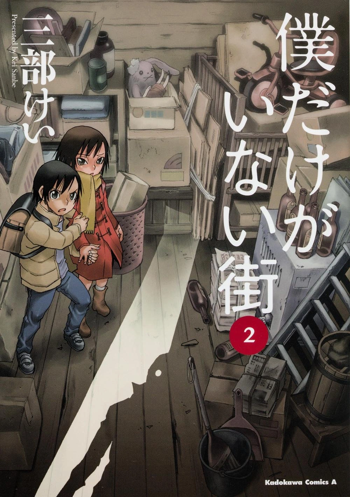
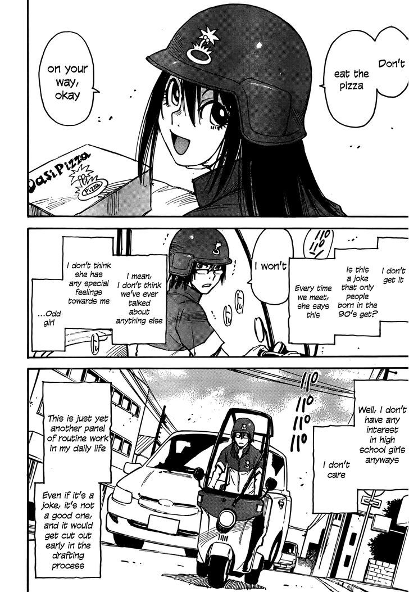

Mystery
Boku dake ga Inai Machi
by Kei Sanbe
Synopsis
Satoru Fujinuma is a struggling manga artist who possesses a mysterious ability called Revival, which sends him back in time moments before a life-threatening incident occurs. When he is falsely implicated in a serious crime, his ability transports him eighteen years into the past, to his elementary school days. Determined to prevent a tragic kidnapping and murder, Satoru must uncover the truth and save the people whose lives were forever changed by the past.
Chapter 1

Satoru Fujinuma is a struggling manga artist who works part-time delivering pizzas. He experiences sudden moments when time rewinds, allowing him to
— End of chapter —